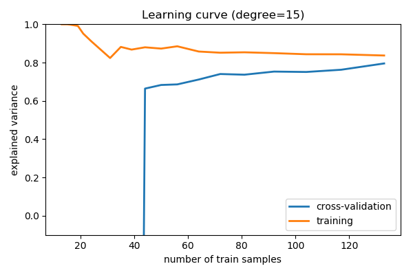

Note
Click here to download the full example code or run this example in your browser via Binder
1.3. Underfit vs overfit: do I need more data, or more complex models?¶
This is adapted from the scikit-learn chapter in the scipy lectures.
1.3.1. A toy problem: fitting polynomes¶
1.3.1.1. Data generation model¶
We consider data generated by the following mechanism, as a toy model of housing prices
import numpy as np
def generating_func(x, err=1):
return np.random.normal(10 - 1. / (x + 0.1), err)
1.3.1.2. Polynomial regression¶
The crucial hyperparameter is the degree
from sklearn.pipeline import make_pipeline
from sklearn.preprocessing import PolynomialFeatures
from sklearn.linear_model import LinearRegression
model = make_pipeline(PolynomialFeatures(degree=2), LinearRegression())
1.3.2. Train error versus test error¶
Generate some data with few samples, for easy understanding
n_samples = 8
np.random.seed(0)
x = 10 ** np.linspace(-2, 0, n_samples)
y = generating_func(x)
# For plotting
x_plot = np.linspace(-0.2, 1.2, 1000)
# randomly sample the data
np.random.seed(1)
x_test = np.random.random(200)
y_test = generating_func(x_test)
1.3.2.1. Underfit: high bias¶
import matplotlib.pyplot as plt
plt.figure(figsize=(6, 4))
plt.scatter(x, y, marker='x', c='k', s=100)
plt.scatter(x_test, y_test, marker='.', c='k', s=50, alpha=.2)
degree = 1
model = make_pipeline(PolynomialFeatures(degree), LinearRegression())
model.fit(x[:, np.newaxis], y)
plt.plot(x_plot, model.predict(x_plot[:, np.newaxis]), '-b')
plt.xlim(-0.2, 1.2)
plt.ylim(0, 12)
plt.xlabel('house size')
plt.ylabel('price')
This model has a low train score (high train error):
print(model.score(x[:, np.newaxis], y))
Out:
0.557186529575
If we apply it to the unseen data, the test error is
print(model.score(x_test[:, np.newaxis], y_test))
Out:
0.556942968895
1.3.2.2. Overfit: high variance¶
plt.figure(figsize=(6, 4))
plt.scatter(x, y, marker='x', c='k', s=100)
plt.scatter(x_test, y_test, marker='.', c='k', s=50, alpha=.2)
degree = 6
model = make_pipeline(PolynomialFeatures(degree), LinearRegression())
model.fit(x[:, np.newaxis], y)
plt.plot(x_plot, model.predict(x_plot[:, np.newaxis]), '-b')
plt.xlim(-0.2, 1.2)
plt.ylim(0, 12)
plt.xlabel('house size')
plt.ylabel('price')

This model has a high train score (very low train error):
print(model.score(x[:, np.newaxis], y))
Out:
0.994643291526
If we apply it to the unseen data, the test error is
print(model.score(x_test[:, np.newaxis], y_test))
Out:
-97767.6303449
1.3.3. Validation curve varying model complexity¶
Fit polynomes of different degrees to a dataset: for too small a degree, the model underfits, while for too large a degree, it overfits.
1.3.3.1. Generate a larger dataset¶
np.random.seed(1)
x = np.random.random(200)
y = generating_func(x)
# split into training, validation, and testing sets.
from sklearn.model_selection import train_test_split
x_train, x_test, y_train, y_test = train_test_split(x, y, test_size=.4)
Show the training and validation sets
plt.figure(figsize=(6, 4))
plt.scatter(x_train, y_train, color='red', label='Training set')
plt.scatter(x_test, y_test, color='blue', label='Test set')
plt.title('The data')
plt.legend(loc='best')
1.3.3.2. The validation_curve function¶
from sklearn.model_selection import validation_curve
degrees = np.arange(1, 21)
model = make_pipeline(PolynomialFeatures(), LinearRegression())
# The parameter to vary is the "degrees" on the pipeline step
# "polynomialfeatures"
train_scores, validation_scores = validation_curve(
model, x[:, np.newaxis], y,
param_name='polynomialfeatures__degree',
param_range=degrees)
# Plot the mean train error and validation error across folds
plt.figure(figsize=(6, 4))
plt.plot(degrees, validation_scores.mean(axis=1), lw=2,
label='cross-validation')
plt.plot(degrees, train_scores.mean(axis=1), lw=2, label='training')
plt.legend(loc='best')
plt.xlabel('degree of fit')
plt.ylabel('explained variance')
plt.title('Validation curve')
plt.tight_layout()

1.3.4. Learning curves: varying the amount of data¶
Plot train and test error with an increasing number of samples
# A learning curve for d=1, 5, 15
for d in [1, 5, 15]:
model = make_pipeline(PolynomialFeatures(degree=d), LinearRegression())
from sklearn.model_selection import learning_curve
train_sizes, train_scores, validation_scores = learning_curve(
model, x[:, np.newaxis], y,
train_sizes=np.logspace(-1, 0, 20))
# Plot the mean train error and validation error across folds
plt.figure(figsize=(6, 4))
plt.plot(train_sizes, validation_scores.mean(axis=1),
lw=2, label='cross-validation')
plt.plot(train_sizes, train_scores.mean(axis=1),
lw=2, label='training')
plt.ylim(ymin=-.1, ymax=1)
plt.legend(loc='best')
plt.xlabel('number of train samples')
plt.ylabel('explained variance')
plt.title('Learning curve (degree=%i)' % d)
plt.tight_layout()


- 
1.3.5. Summary¶
Comparing train and test error, ideal when vary parameters and amount of data, tells us whether the model is:
- Overfitting, ie data limited, and should not be made more complex and regularization is important, or ideally aquiring more data
- Underfitting, ie not rich enough for the data available, and should be made complex
Total running time of the script: ( 0 minutes 1.226 seconds)